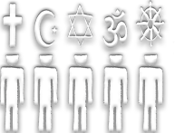

O QUE É INTOLERÂNCIA RELIGIOSA?
Não existe uma definição legal específica para o que seria tal prática, porém, em termos gerais, a intolerância religiosa pode ser caracterizada por ideologias e práticas que em conjunto podem ser convertidas em atos de repressão, discriminação, perseguição ou mesmo atentado à vida de indivíduos ou grupos que possuem determinada crença religiosa ou a falta de tal.
A INTOLERÂNCIA RELIGIOSA DEVE SER TOLERADA?
De maneira alguma. Qualquer ato responsável por ferir a dignidade ou impedir o exercício da liberdade de alguém deve ser devidamente denunciado e interrompido.
Vale enfatizar algumas referências, tal como o artigo 1º da Declaração Universal dos Direitos Humanos que diz que “Todos os seres humanos nascem livres e iguais em dignidade e em direitos. Dotados de razão e de consciência, devem agir uns para com os outros em espírito de fraternidade”.
Não tolere a intolerância religiosa: tolere, apoie e acolha a diversidade!
ABRANGÊNCIA LEGAL
Apesar da falta de definição, a intolerância religiosa é definida, mesmo que de forma incompleta, pela legislação brasileira (constituição, ECA, código penal, etc), pela Declaração Universal dos Direitos Humanos e pela Declaração de Eliminação de Todos os tipos de Intolerância e Racismo. Você pode ler alguns dos artigos que demonstram isso
clicando aqui.
DENUNCIA
No Brasil e no mundo, existem órgãos de denuncia específicos (como em Salvador, o Centro de Combate à Intolerância Religiosa) e órgãos gerais (como a Policia Civil e a Polícia Militar).
Clique aqui e saiba mais.